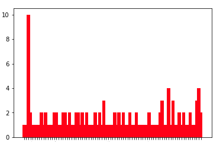

Analysis
Our project's purpose was to examine if there were any links between traffic camera locations and traffic incidents in Austin, Texas. We found two datasets that provided us with traffic camera locations and traffic incidents; the traffic camera info was provided by the City of Austin Transportation Department and the traffic incident info is provided by the Austin-Travis County traffic reports RSS feed. Utilizing this data, we sought to find if traffic cameras have an effect on traffic incidents (increase, decrease, or stay the same) when they are activated.